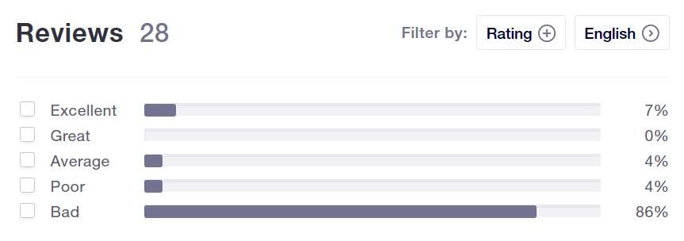
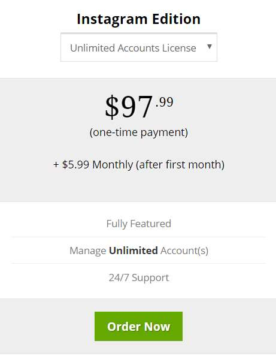
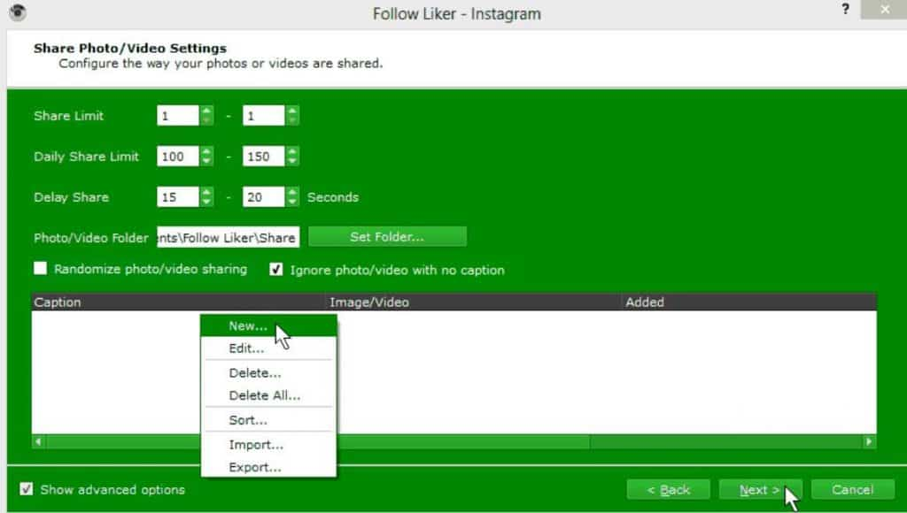
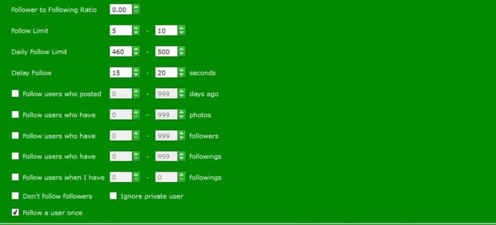

Congratulations on doing more research before you buy Followliker. If you’re wondering if Followliker is safe and worth it, then this review is for you. After testing the tool for a few days, I want to share my thoughts about this tool with you.
What is Followliker?
Followliker is a social media management tool that works with the world’s most popular social media platforms, such as: Facebook, Twitter, Instagram, and Tumblr. The tool offers a wide range of services to grow your social media profiles. They have an edition for each social media platform. We will be trying out the Instagram edition.
The Instagram allows you to…
- Auto-Follow Users
- Unfollower Users
- Upload and Share Content
- Auto-comment on Posts
- Auto-like posts.
- Send Direct Messages
- Schedule Tasks
- And a lot more.
Followliker is a favorite in social media marketing circles. But does it really work as well as they say?
Before we get into the review, here are two of our favorite Instagram tools:
Upleap
Upleap is great because they it’s more of a social media management service, not really a bot.
What they do is hire expert social media managers to take control of your account and create activity on your behalf. So you can basically sit back and watch as your Instagram account grows, without having to lift a finger.
The main downside with this tool is it’s a bit pricey, although the service quality is one of a kind. Highly recommended. If you feel like it’s not the right one for you, there’s always the option to try the free trial or request a refund.
Kenji
Our second favorite Instagram tool is Kenji, which is an Instagram automation bot. Usually, Instagram bots are quickly shutdown because they create too much fake activity on your profile.
Kenji works right a long Instagram’s rules because it basically creates an activity-profile of how you interact with your account, and then automates those actions.
You can also change the speed, limit, and active-services, so your Instagram will always be safe. One thing I loved about Kenji is it’s very cheap. And it has a free trial too.
For a full list of our recommended tools, check out this article.
Now let’s get back to our Followliker review.
What You Need to Know About Followliker:
What you need to know is Followliker is a program you need to download and run on your computer.
The system requirements are incredibly low almost any computer should meet them (2 GB RAM, any operating system). To avoid taking up valuable resources, most marketers prefer to install the software on a Windows Private Server.
P.S This tool is very similar to Jarvee.
At the moment, there’s no web-based interface. It’s also recommended to use a proxy.
Followliker Reviews & Reputation:
While some people say Followliker works great for them, after a bit of research, I found numerous complaints about the company.
To start, their Trust Pilot page rating is 2 out of 5 stars, with 86% of reviewers leaving a one star review. There’s a lot of scathing reviews about this company on that page, that’s for sure.

One of the most common complaints is about bad customer support. It looks like a lot of users struggle to contact the support team and are unable to get a refund.
But maybe the features are worth the hassle?
Continue reading to find out.
Getting Started:
Once you install the program, you’ll need to create a new project, and then use the setup Wizard to configure your new campaign.
Overall, if you can create a campaign with proper settings, the bot should start running and creating activity on your Instagram profile. Getting started with this tool is rather easy but there is a learning curve. We’ll talk a bit more about the features found in the Wizard later on.
One thing to keep in mind is some of the terms on this software are a little different than you might be used to. For example, the term they use for targeting users is called “scrape user” which basically makes a list of users to target. So you’ll have to learn a few terms. Other than that, everything is rather straightforward.
Now to answer the question that’s on your mind.
Is Followliker Safe?
Based on what I could determine from my research and from trying out the tool a bit, it seems like Followliker is relatively safe. When it comes to using Instagram bots, I always recommend to set the limits as low as possible, at least at first.
If you input too many tasks and actions, Instagram will quickly detect the aggressive activity and lock your account. Nevertheless, there are plenty of marketers who use Followliker with no issues.
How Much Does Followliker Cost?
Followliker’s pricing structure is a little different. Instead of paying a flat fee every month, as you would with normal Instagram tools, they want you to buy a full license, and then pay a monthly fee. The problem here is the license costs quite a bit.

An unlimited license for the Instagram edition costs $97.99 and then $5.99 a month. There are also license-packages, such as Instagram + Tumblr, or even the Full Edition. The Full Edition allows you to use the bot on every social media platform. The problem is it costs $337.99 + $5.99 a month.
The good news is you can choose the number of licenses you want, one is cheaper, but it only allows you to connect one profile. One license costs $57.99 and then $5.99 a month. Once the first payment is done, it’s actually rather cheap to continue using the software.
But there’s a catch, which we’ll talk about in the cons section.
Followliker Core Features:
Now that we got that out of the way, let’s take a look at Followliker’s core features. What can it do?
Shuffle Tasks
You might have seen this option in the Wizard. What this does is create a more random footprint, which is harder for Instagram to detect. It basically reorders the queue of tasks, so there’s no repeated pattern.
Scrape Users
As mentioned earlier, scrape means search. You’ll need to add some parameters for the bot to work with.
For example:
- Scrape online top results.
- Ignore users with no profile pictures
- Scrape only users with white-listed keywords.
- Ignore private users.
- And more.
One interesting thing about this feature is the scrape limit is always set to 40 users a day.
Scrape User Query
Now this is a cool feature to really narrow down your target audience. Inside the scrape user menu, you can right click on the query area and choose a query from the drop down menu.
What this means is basically the bot will interact with the user if one of those query conditions are met. For example, if a user followers a specific account and has interacted with them (either liked a post or left a comment) then the bot will follow them.
It can be a bit bothersome to add queries, but it helps reduce the chances of the bot following too many inactive profiles.
These queries essentially guarantee the users the bot follows are active. Combine those queries with the other filters mentioned earlier and your account should steadily grow with real followers.
Share Photo and Video (Upload Content)

It’s always nice to have a tool that can upload images to your Instagram account. With Followliker you can add a whole list of photos to share.
As a matter of fact, you can set a folder where the content can be found on your computer, and the bot will pick one file from that folder to upload. It’s important to remember to keep the share limits to 1 a day. One cool thing about this feature is it not only uploads pictures but videos too.
You can also configure the details of each post, such as: captions (now works with emojis), first comment, location, add a share time (schedule), and up to 30 hashtags. Overall, the share photo and video task is very useful and it can save you a lot of time.
Add Limits and Delays

A great thing about this software is you can set a delay for almost every action. When using the auto-follow task, it’s always a good idea to set a nice delay between the next follow.
With Followliker, the delay number is in seconds, so if you want to wait for several minutes, then you’ll have to calculate how many seconds that is. As always, I recommend keeping the limits as low as possible. Some marketers even recommend keeping the limits in the single-digits.
Followliker Pros:
Here’s what we liked most about this tool.
Lots of Configuration Options 👍
With Followliker, basically every setting can be configured. It’s always nice to have the option to change the limits, delays, and all kinds of settings. Granted, there is a learning curve. The Wizard makes things easy though. Great customization!
Plenty of Filters and Queries 👍
Followliker has plenty of filters and queries too. When setup correctly, there’s no doubt you can quickly build a real following on autopilot.
Personally, I found the user-queries quite useful. For instance, there’s one called “User has Liked User x Post” which means the bot will only follow users that have interacted with a target account. This is one way to make sure your new followers are actually active.
Works on Every Social Media Platform (License is Needed) 👍
The tool has editions for every social media platforms. It makes it easy to manage multiple accounts on multiple channels in one place. Granted you do need to buy the specific social media license though.
Followliker Cons:
Now here’s what we though could be improved.
Steep Learning Curve 👎
To get the bot working correctly, there are a lot of things you need to configure. Even the initial setup is a hassle.
Besides the many tabs and settings, they also recommend using a VPS and proxy, which can be a bit complicated to setup. Be ready to spend a lot of time figuring things out. Luckily, they do have a decent support database with tutorials and instructions.
No Free Trial 👎
The deal-breaker for me is Followliker does not let you sign-up on a trial basis. Most social media tools offer a free trial. Our recommended tools from earlier include a free 3 day trial. Unfortunately, Followliker doesn’t offer one. And from what we know about their online reputation, it will probably be a hassle to get a refund.
Slow Customer Support 👎
Remember the negative reviews on their Trust Pilot page? Most of them are about Followliker’s support system. It seems like they take awhile to reply to requests. Sometimes they ignore emails all together. From what I can tell, the customer support isn’t the best. And that brings us to another downside.
No Refunds 👎
At the moment, Followliker’s policy is all sales are final and no refunds are given whatsoever. I feel like it’s a little suspicious to not even consider granting refunds. Pretty much every software and company has some sort of refund policy, so this was another deal breaker for me.
Expensive 👎
As I mentioned earlier, it’s a bit pricey. Considering they don’t offer refunds, you need to be really sure this is the right tool for you. On the other hand, after the first payment, the monthly fees are pretty low. Overall, I feel it’s a bit expensive for the average person.
Do We Recommend Followliker?
Although Followliker isn’t a bad tool, it certainly has its uses, we don’t recommend it at the moment. For me, the deal breaker is the no refund policy.
I feel like every software should have some sort of trial period. What happens when someone buys the license and decides it’s not right for them? Money down the drain.
Besides that, I felt like the user interface is a bit complicated. Not to mention you have to install the program either on your computer and have it running 24/7 or use a Windows VPS and proxies.
What Do We Recommend?
We recommend a number of social media automation tools, but if you want to save a click, here are our top two tools:
Unlike Followliker, these two tools offer a free 3 day trial. No strings attached. No credit card required.
If you like it, feel free to upgrade. If not, then you’re free to move on.
Thanks for taking the time to read this review. Got questions? Leave them below!


1 Comment